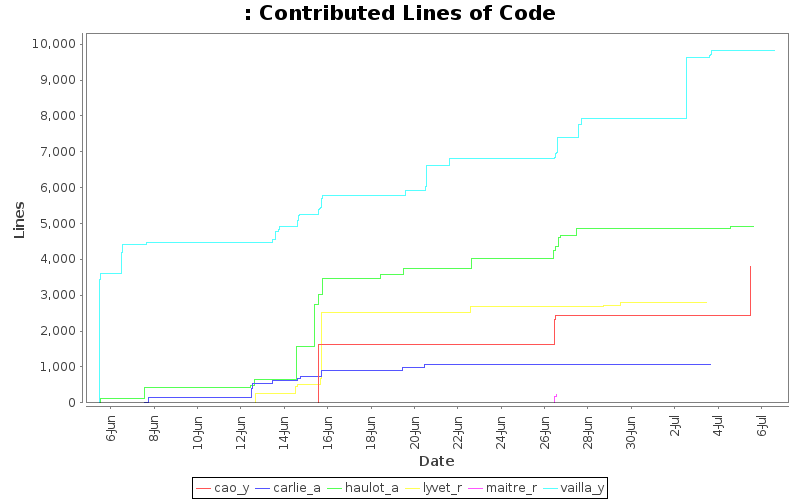
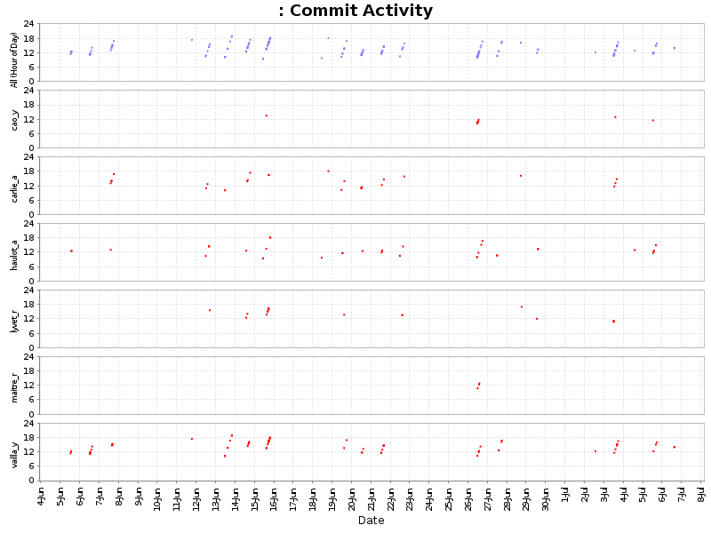
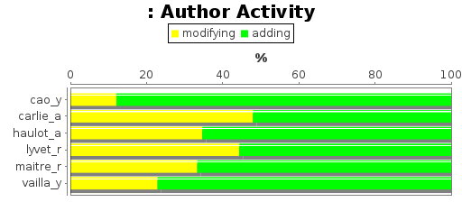
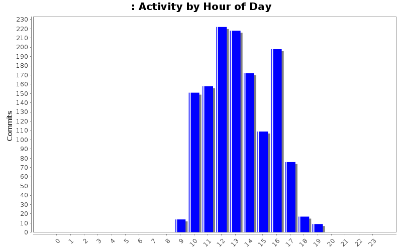
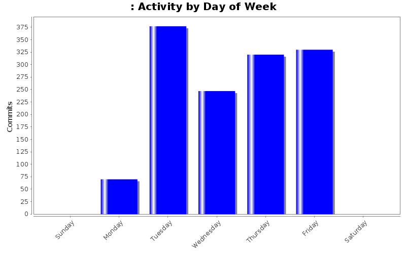

Developer of the Month
| Month | Author | Lines | Tweet This |
|---|---|---|---|
| July 2012 | vailla_y | 1893 |  |
| June 2012 | vailla_y | 7921 | |
| Author | Author Id | Changes | Lines of Code | Lines per Change |
|---|---|---|---|---|
| Totals | 1344 (100.0%) | 22639 (100.0%) | 16.8 | |
| vailla_y | vailla_y | 596 (44.3%) | 9814 (43.3%) | 16.4 |
| haulot_a | haulot_a | 232 (17.3%) | 4906 (21.7%) | 21.1 |
| cao_y | cao_y | 138 (10.3%) | 3812 (16.8%) | 27.6 |
| lyvet_r | lyvet_r | 191 (14.2%) | 2805 (12.4%) | 14.6 |
| carlie_a | carlie_a | 170 (12.6%) | 1068 (4.7%) | 6.2 |
| maitre_r | maitre_r | 17 (1.3%) | 234 (1.0%) | 13.7 |
| Author | Up to 7/2011 | 8/2011 | 9/2011 | 10/2011 | 11/2011 | 12/2011 | 1/2012 | 2/2012 | 3/2012 | 4/2012 | 5/2012 | 6/2012 | 7/2012 |
|---|---|---|---|---|---|---|---|---|---|---|---|---|---|
| Totals | 0 (-) | 0 (-) | 0 (-) | 0 (-) | 0 (-) | 0 (-) | 0 (-) | 0 (-) | 0 (-) | 0 (-) | 0 (-) | 19293 (100.0%) | 3346 (100.0%) |
| vailla_y | 0 (-) | 0 (-) | 0 (-) | 0 (-) | 0 (-) | 0 (-) | 0 (-) | 0 (-) | 0 (-) | 0 (-) | 0 (-) | 7921 (41.1%) | 1893 (56.6%) |
| haulot_a | 0 (-) | 0 (-) | 0 (-) | 0 (-) | 0 (-) | 0 (-) | 0 (-) | 0 (-) | 0 (-) | 0 (-) | 0 (-) | 4858 (25.2%) | 48 (1.4%) |
| cao_y | 0 (-) | 0 (-) | 0 (-) | 0 (-) | 0 (-) | 0 (-) | 0 (-) | 0 (-) | 0 (-) | 0 (-) | 0 (-) | 2422 (12.6%) | 1390 (41.5%) |
| lyvet_r | 0 (-) | 0 (-) | 0 (-) | 0 (-) | 0 (-) | 0 (-) | 0 (-) | 0 (-) | 0 (-) | 0 (-) | 0 (-) | 2790 (14.5%) | 15 (0.4%) |
| carlie_a | 0 (-) | 0 (-) | 0 (-) | 0 (-) | 0 (-) | 0 (-) | 0 (-) | 0 (-) | 0 (-) | 0 (-) | 0 (-) | 1068 (5.5%) | 0 (0.0%) |
| maitre_r | 0 (-) | 0 (-) | 0 (-) | 0 (-) | 0 (-) | 0 (-) | 0 (-) | 0 (-) | 0 (-) | 0 (-) | 0 (-) | 234 (1.2%) | 0 (0.0%) |

| Month | Author | Lines | Tweet This |
|---|---|---|---|
| July 2012 | vailla_y | 1893 | |
| June 2012 | vailla_y | 7921 | |



